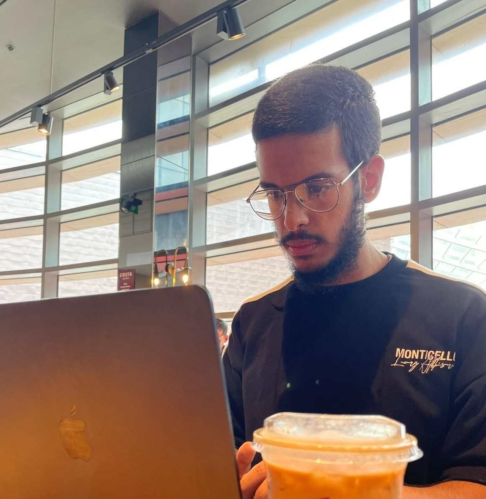
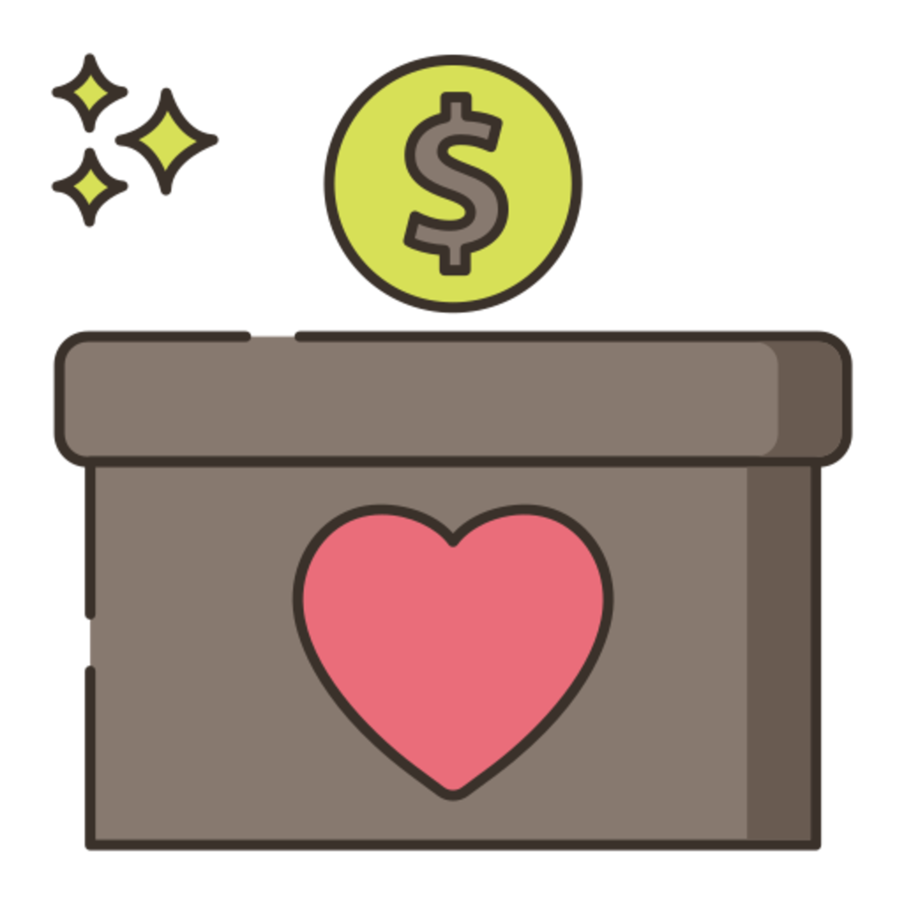

Aspiring Cloud Security Architect ☁️ | CyberTutor Content Creator 🎥 | CyberNews Writer ✍️ | Solo Dev as a hobby 🧑💻 | Brunel University London Student 🎓
I value consistency, discpline, self learning and think outside the box.
</AboutMe>
Cybersecurity excites me because it's a field where curiosity truly pays off. I'm driven by figuring out not just how systems work, but how to outsmart the threats they face. That mindset keeps me exploring the fast moving world of cybersecurity and constantly pushing myself to grow.
Now studying Cybersecurity at Brunel University, I bring learning to life through hands on labs, competitions, and self driven projects never waiting for opportunities but creating them. My long term vision is to protect critical systems as a Cloud Security Architect while sharing insights and inspiring others through content creation and cyber blogging because for me, tech is about both building and inspiring.
☕📚 I enjoy reading, cycling, and sipping good coffee, which keep me energized and curious.

</Founder>
CyberTutor Youtube Channel
As the founder of CyberTutor, I created this YouTube channel to make cybersecurity simple, exciting, and accessible for everyone. Through clear tutorials, hands on projects, and real world insights, I aim to help both beginners and professionals sharpen their skills and stay ahead in the digital world so if you're curious, I'd love for you to check it out!
I built this mobile app as a one time scannable QR code generator with a clean, simple interface. Each code can only be scanned once perfect for tickets, invites, and exclusive access giving users both security and convenience. Best of all, it's available in the Apple App Store for just £0.99.
CyberTutor Students Resource Page : I also built the Resource Page a dedicated hub packed with study guides, toolkits, book recommendations, and curated links to help learners deepen their knowledge.
The Private WireGuard VPN Gateway project is a cloud-based security solution that encrypts and routes your internet traffic through a private Oracle Cloud instance for maximum privacy. Built with WireGuard, Docker, and SSH encryption, it ensures secure communication between your device and the web.
Program for Summarising News Articles: This project was made with Python and the Flask framework. It also has a straightforward interface (HTML & CSS) that provides a one-paragraph synopsis of the blog post or article.
Localize AI : This project it's one of my favorite project using mix of tech stacks such as (Docker - linux "Ubuntu" and ollama model) and I have setup it using windows CMD with WSL and run it locally using one the best note taking systems obsidian.
Hash Cracker : This project is created for educational purposes ONLY, which it's main functionality using python that use to crack both hashing versions (MD5 & SHA1) forms with simple interface using HTML and CSS.
File Organizer Mini project : This is very light weight program using python. However it's very effective that if you have messy files everywhere this program is for you simple and effective.
Image Encryption program: This is simple program but effective, if you want to hide / lock an senstive image.
This program is for you, enter the image path file address into the program and your image is locked forever
(YOU MUST KNOW YOUR DECRYPTION CODE OTHERWISE YOUR IMAGE WILL BE LOCKED FOREVER 💀)
This is way my first role at Ayesha youth project organization which I have been responsible to raise money for humanitarian action which throughout this role I was raised over £400 toward this fundraising... which I believe it will help a wide range of people who are need of it.
Fundraising Volunteer

Yemen Land LTD
★★★★★
As a Customer Service Volunteer at Yemen Land Ltd., I provided support to customers, resolving their inquiries and ensuring a positive experience. This role enhanced my communication skills and ability to handle diverse customer needs effectively.
Customer Service Volunteer
The Renewal Programme
★★★★★
I'm taking part of organizing the local children at “kingston primary school”from age 8 - 12 summer holiday activities program from mixed sport activities such as ; Basketball , Football , Boxing etc... to fill the children free time with sports that will gain increase in there bodies health.
Youth Holiday Activities Programme
Deen Developers
★★★★★
In the Deen Developers Hackathon 2025, I had the incredible opportunity to collaborate with a passionate team on a project called Route AI, an innovative solution designed to help people in under-resourced countries find the nearest emergency hospital through the safest routes possible. Recognizing that many regions suffer from poor infrastructure and dangerous travel conditions, our project aimed to bridge this life saving gap using AI and cloud technologies. I played a key role as the Information Security lead and Prototype Designer, ensuring our system was both secure and user-friendly.
Hackathon 2025 - Participant
Global Social Innovators in Github
★★★★★
As a volunteer contributor and intern at Global Social Innovators, I'm collaborating with experienced colleagues to develop GSI's upcoming mobile SaaS application for both iOS and Android platforms. Working with technologies including Node.js, Python, and Flutter, I'm contributing to innovative solutions that address social challenges while gaining hands on experience in cross-platform mobile development alongside a talented and experienced team.
GitHub Volunteer Contributor
</Top Certifications>
SC-900
MS, Azure | Date: Jun 2025
This is my first step toward becoming a Cloud Security. I’m focused, committed, and hungry to learn more. Up next: more advanced Azure certifications, hands on projects, and lab work to apply these concepts in real-world environments.
LFS101: Introduction to Linux
Linux Foundation | Date: Aug 2025
Introduction to Linux badge have gained the skills to effectively navigate and manage configurations across major Linux distributions. They utilize both the graphical interface and command line proficiently.
Foundational
Ethical Hacker
Cisco | Date: February 2025
The holder of this student level credential has a broad understanding of the legal and compliance requirements and is proficient in the art of scoping, executing, reporting vulnerability assessments, and recommending mitigation strategies.
Cloud & Virtualization Badge
Vmware | Date: Sep 2024
This badge holder will be aware of the basics of virtualization and the data center. Cloud concepts will be introduced along with virtualization solutions.